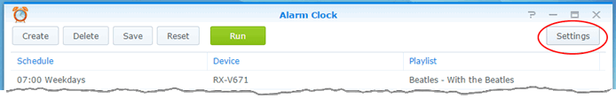
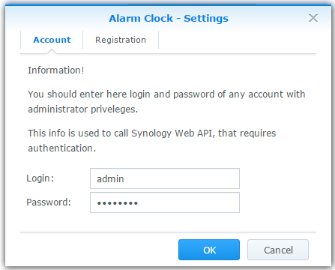
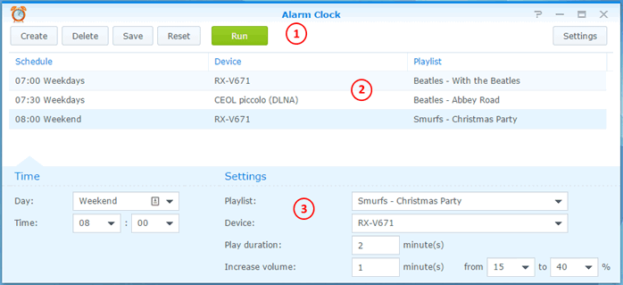

This program turns your Synology DiskStation into an intelligent music alarm clock. At the appointed time, you will be awakened by the gentle sounds of your favorite melody.
You can choose to play any playlist from configured in AudioStation, or created specifically for this purpose.
Music can play through a connected to DiskStation USB sound card or speakers, as well as any available in AudioStation network player by DLNA or AirPlay protocol.
You can set different ringtones to different days of week, and set multiple alarms for different players. For example, early in the morning on weekdays in your room through the connected speakers, and a bit later - on a network player in the nursery for a child. Moreover, at the weekend - set alarm clock to a later time.
For each alarm clock, the play time is set.
You can adjust the fade playback to your awakening was more pleasant.
To start at the scheduled time, AlarmClock uses the built-in task DiskStation scheduler. Therefore, you must specify the account with rights for adding tasks to the built-in scheduler. For example, it may be the system administrator account.
Click on "Settings" button on the toolbar.

A window for entering a name and password for the account will be opened.

The main window consists of a toolbar (1), the list of tasks (2) and the settings panel for the selected task (3).

When playing the player on the network protocol DLNA, the majority of players are automatically included (go from sleep mode) and begin playback. However, some players are not automatically included:
AlarmClock recognize players from this list, and sends them to a special command to wake it.
If you have a network player that does not turn on automatically when you start playback, write the authors of the program, and it will be added to the list of supported wake-on-lan devices.